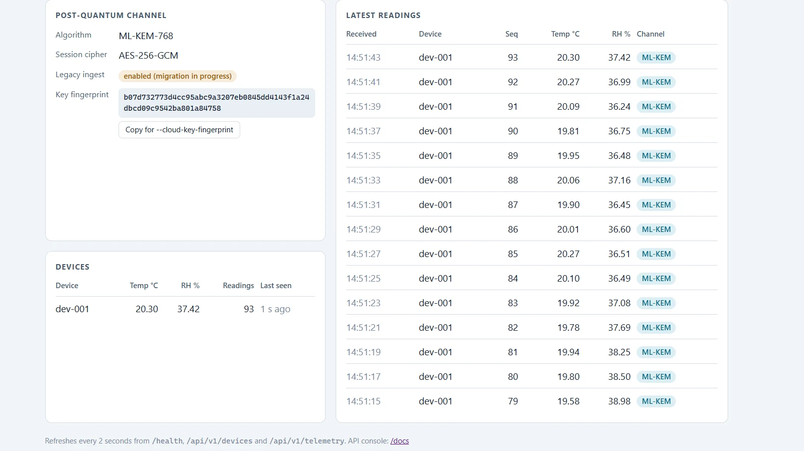
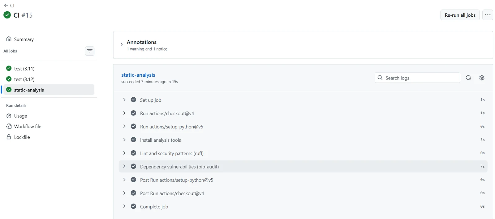

A legacy edge-to-cloud IoT system (a constrained sensor, an edge gateway and a cloud service) migrated to post-quantum key establishment on the long-haul hop, with monitoring, CI/CD, security tests and a documented rollback policy.
The legacy system had no real key management, and it couldn't simply be replaced.
Devices used a hardcoded AES-128-CBC pre-shared key, with no key establishment, no rotation and no authentication.
Traffic recorded today could be decrypted later by a quantum-capable attacker: "harvest now, decrypt later".
The device is Arduino-class with a 256-byte buffer and firmware that can't be re-flashed. An ML-KEM-768 public key alone is 1,184 bytes.
Solution
Terminate post-quantum cryptography at the gateway. The device hop stays legacy because it physically has to; the gateway-to-cloud hop, the one exposed to long-term recording, gets the full upgrade.
Post-quantum handshakeML-KEM-768 with key pinning, forward secrecy and HKDF-derived session keys.
Authenticated encryptionAES-256-GCM per reading, with counter nonces that reject replays.
No silent downgradeRolling back to legacy is an explicit operator decision.
ObservabilityLive dashboard, health checks, Prometheus metrics, JSON logs.
Automated quality gatesCI with 142 tests, static analysis and dependency scanning.
My contribution
What I led and built
Led the gateway-to-cloud modernization using Python, FastAPI, ML-KEM-768 key establishment and AES-256-GCM encryption.
Built the monitoring dashboard, health checks, metrics and structured logging.
Set up CI/CD with GitHub Actions and Docker, with pytest security tests, static analysis and dependency scanning.
Documented the migration strategy and evaluated security and performance trade-offs.
Team / course context
Group course project; the repository is hosted on a teammate's GitHub account.
The baseline legacy system was intentionally built imperfect so its weaknesses could be studied.
The course also asked teams to critically evaluate code and design decisions produced by an LLM.
Technical implementation
Architecture
Legacy device256 B buffer · fixed firmware · unchanged
Legacy wire format and weaknesses, replay tracking, ingest and APIs
Security tests as evidenceTests marked security assert that a legacy weakness is real. One forges a reading from another device by tampering with the IV, without knowing the key, and the legacy gateway accepts it.
Visual walkthrough

Dashboard detail. The post-quantum channel (ML-KEM-768 + AES-256-GCM, pinned key fingerprint) and every reading tagged by the channel that delivered it.
Observability. Gateway /health and cloud Prometheus /metrics from a local run of about 10 minutes: one ML-KEM handshake, every reading forwarded over the post-quantum channel, and nothing rejected or replayed.

CI pipeline. GitHub Actions runs tests on Python 3.11 and 3.12, then static analysis: Ruff lint and security patterns, and a pip-audit dependency scan.
Challenges & decisions
The device can't run ML-KEM
Challenge
The public key (1,184 B) is over four times the device's 256-byte buffer, and the firmware can't be updated.
Decision
Terminate post-quantum crypto at the gateway and protect the long-haul hop.
Why
That hop is the one an attacker can record at scale and decrypt later.
Fallback could become a downgrade attack
Challenge
Automatically falling back to legacy when the handshake fails lets an attacker force the weak path just by blocking the handshake.
Decision
No automatic fallback. Rollback is an operator setting (--crypto legacy / CRYPTO_MODE=legacy), and the cloud can retire legacy ingest entirely.
Pure-Python ML-KEM
Trade-off
kyber-py is easy to integrate but not constant-time.
Decision
Accept it for the course project, document it as unsuitable for production, and isolate it so swapping in liboqs changes only pqc_channel/channel.py.
Results & lessons
142automated tests, including security and failure suites
0automatic downgrade paths to legacy crypto
9.7 msmedian device-to-cloud latency, legacy baseline (33.5 ms p95)
98 Blegacy frame on the wire, 38.3% of the device buffer
NoteLatency and frame size are pre-migration baselines, measured on 17 September 2026 so the migration's cost could be compared against real numbers.
What I learned
Migrations are mostly about constraints and failure modes: the hardest decisions were where to stop and what not to fall back to.
Writing tests that prove a weakness exists makes security findings concrete instead of theoretical.
What I'd improve next
Replace kyber-py with a constant-time implementation such as liboqs.
Publish the post-migration latency and throughput next to the baseline.